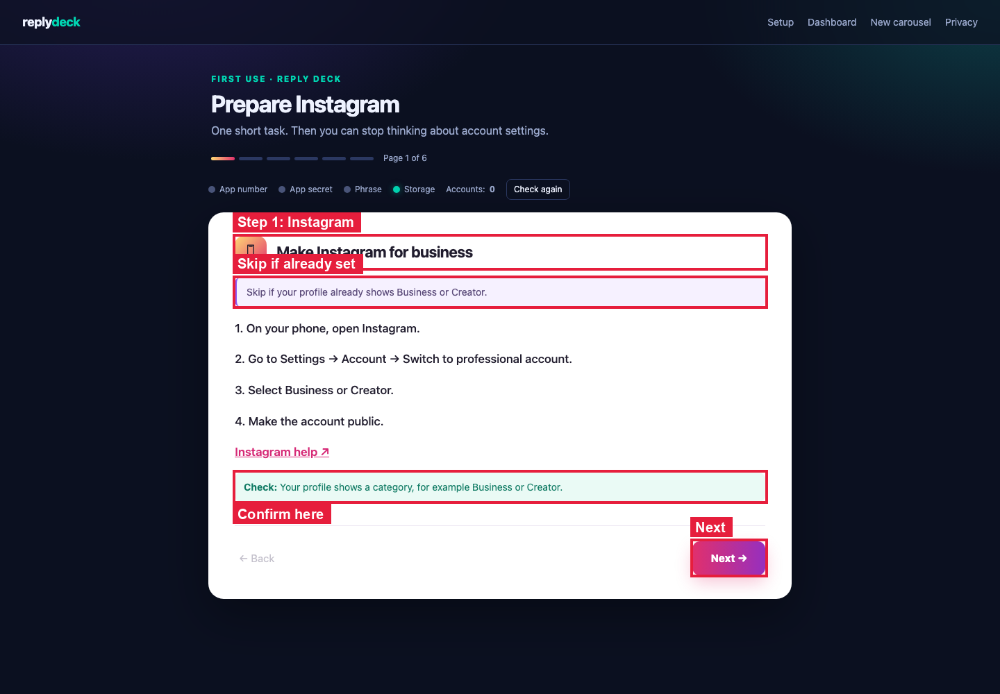
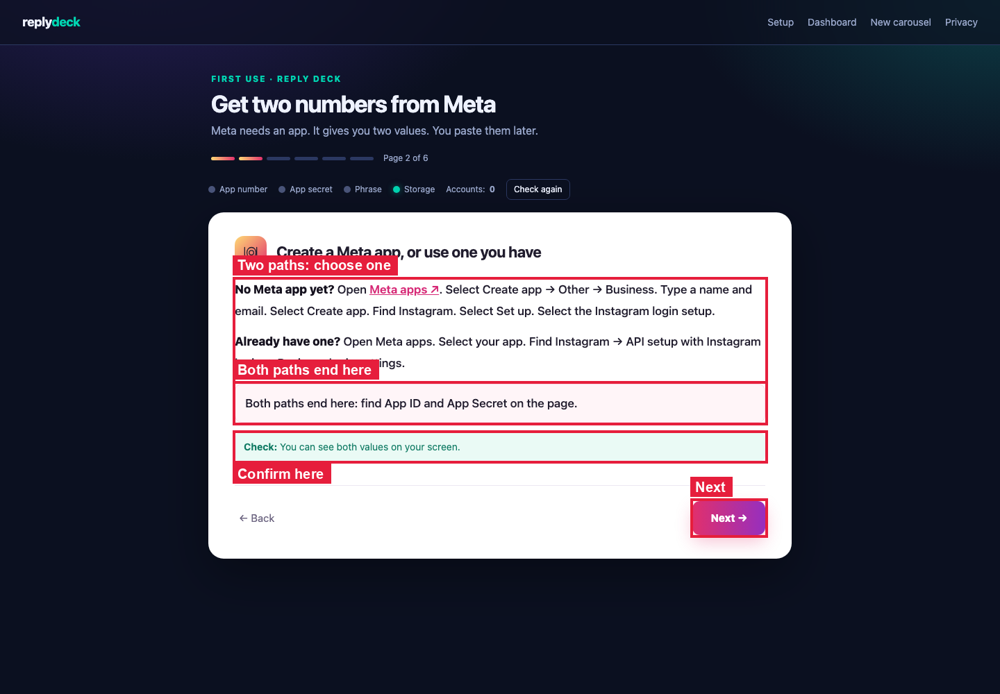
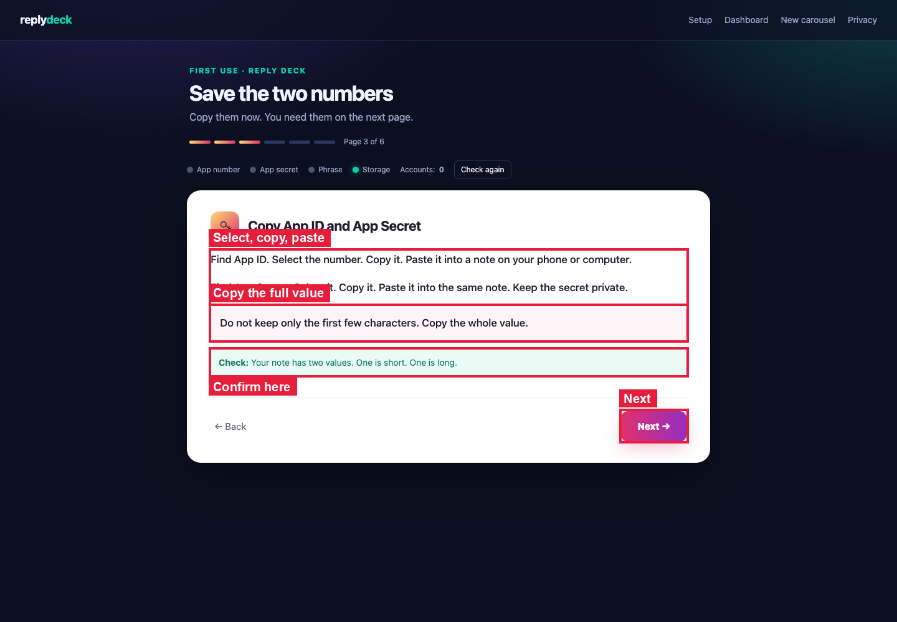
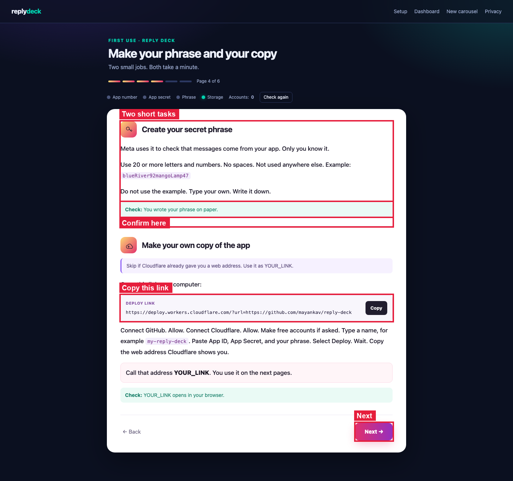
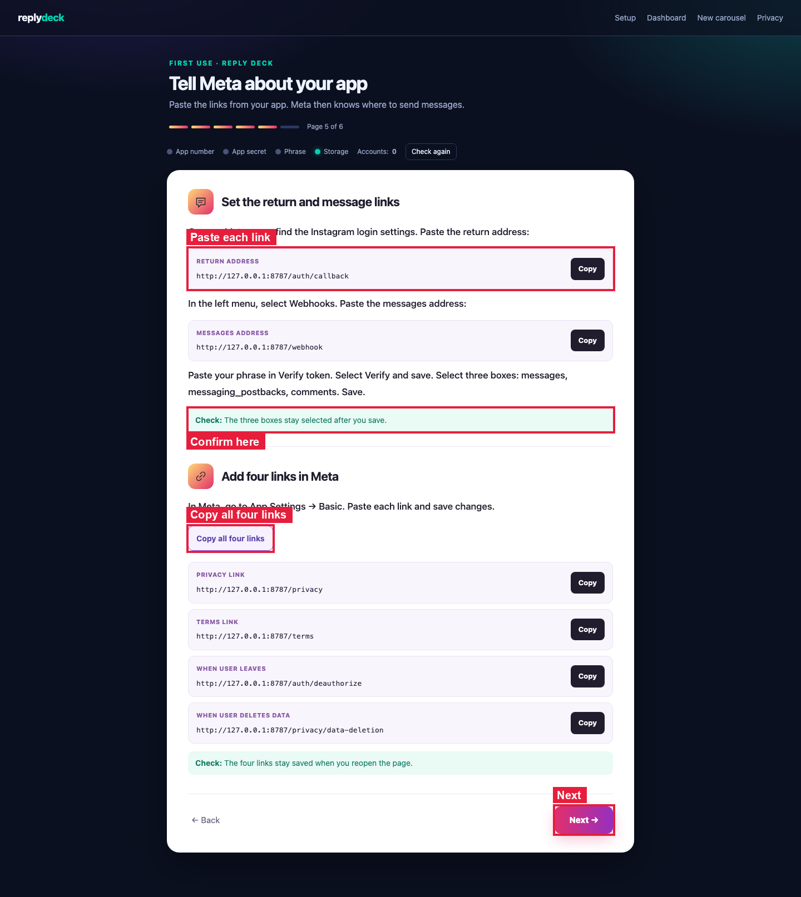
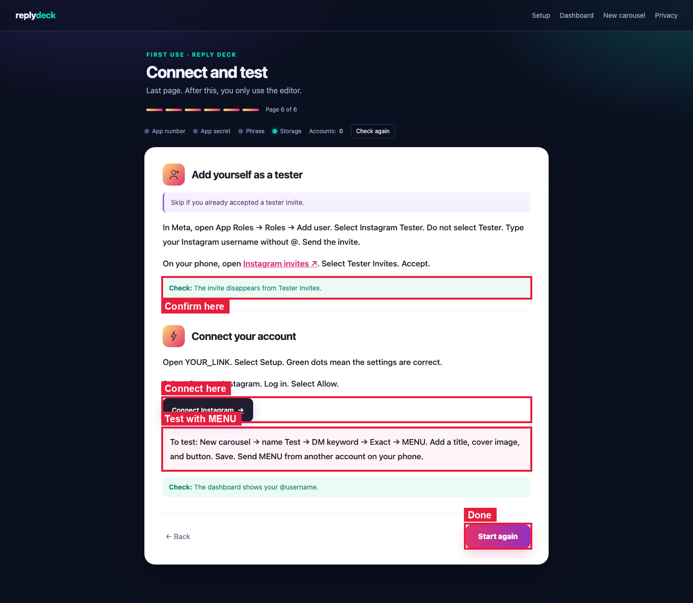

Reply Deck — setup with marked screens
Red boxes mark the place to look or click. Each page shows one or two steps. Do them in order.
Page 1 — Make Instagram for business

- On your phone, open Instagram.
- Tap Settings (the three lines).
- Tap Account.
- Tap Switch to professional account.
- Choose Business or Creator. Tap Continue through the screens.
- Open Settings → Privacy → Public account. Turn it on.
- Skip this page if your profile already shows Business or Creator.
- Check: your profile shows a category. Then tap Next.
Page 2 — Get two numbers from Meta

- Open
https://developers.facebook.com/apps/.
- Tap Create app.
- On "Create an app", choose the card Other.
- Choose the type Business.
- Fill App name (any name, for example "My Reply Deck").
- Fill App contact email (your email).
- Tap Create app.
- Find Instagram in the product list. Tap Set up.
- Select API setup with Instagram login.
- Open Business login settings.
- Already have a Meta app? Open
developers.facebook.com/apps, select your app, then follow the last two lines.
- Check: you can see App ID and App Secret on the page.
Page 3 — Copy the two numbers

- Find App ID. Tap the number to select it. Copy it.
- Open a note app. Paste the number. Write "App ID" next to it.
- Find App Secret. If a Show button is present, tap it.
- Tap the secret to select it. Copy it. Paste it into the same note. Write "App Secret" next to it.
- Copy the whole value, not the first few characters. Keep the secret private.
- Check: the note has two values. One short, one long.
Page 4 — Your phrase and your copy

- Make a secret phrase: 20 or more letters and numbers, no spaces, not used anywhere else. Example:
blueRiver92mangoLamp47. Do not use the example. Write your own on paper.
- Skip the deploy if Cloudflare already gave you a web address.
- Tap Copy on the Deploy link. Open it in a browser on a computer.
- At "Create an app", the repository URL is already filled. Tap Next.
- Tap Connect GitHub. Sign in or create a free account. Allow.
- Tap Connect Cloudflare. Sign in or create a free account. Allow. Signing in with GitHub is fine.
- Select the Git account from the dropdown.
- In the name field, type a name such as
my-reply-deck.
- Paste App ID, App Secret, and your phrase into the three value fields when asked.
- Tap Deploy. Wait. Copy the web address Cloudflare gives you. Call it YOUR_LINK.
- Check: YOUR_LINK opens in a browser.
Page 5 — Tell Meta where to send messages

- On your Meta page, find Business login settings.
- Paste
YOUR_LINK/auth/callback into the return address field. Save.
- In the left menu, select Webhooks.
- Paste
YOUR_LINK/webhook into the Callback URL field.
- Paste your phrase into the Verify token field.
- Tap Verify and save.
- Select the three checkboxes:
messages, messaging_postbacks, comments. Tap Save.
- Open App Settings → Basic. Paste into the four fields: Privacy Policy URL, Terms of Service URL, Deauthorize Callback URL, Data Deletion Request URL.
- Tap Save changes.
- Check: the boxes and links stay saved when you reopen the page.
Page 6 — Add a tester and connect

- In Meta, open App Roles → Roles → Add user.
- Choose the role Instagram Tester. Do not choose Tester.
- Type your Instagram username in the username field. Do not type @.
- Tap Send or Invite.
- On your phone open
instagram.com/accounts/manage_access/. Tap Tester Invites. Tap Accept.
- Open YOUR_LINK. Tap Setup. Green dots mean the settings are correct.
- Tap Connect Instagram. Log in. Tap Allow.
- Check: the dashboard shows your @username.
- To test: New carousel → name Test → DM keyword → Exact →
MENU. Add a title, a cover image, and a button. Save. Send MENU from another account on your phone.
Needed from you
External screens still need marks
Cloudflare and Meta block automated screenshots of their signed-in pages. I cannot see your accounts. Send a screenshot of each screen below and I will mark every field and button on it:
- Meta: Create app screen (the form with app name and email).
- Meta: Instagram → API setup with Instagram login → Business login settings (App ID and App Secret).
- Meta: Webhooks screen (callback URL, verify token, field checkboxes).
- Meta: App Settings → Basic (the four URL fields).
- Meta: App Roles → Roles → Add user (the role dropdown and username field).
- Cloudflare: Create and deploy screen (three value fields and the name field).
- Instagram: Tester Invites screen on the phone.